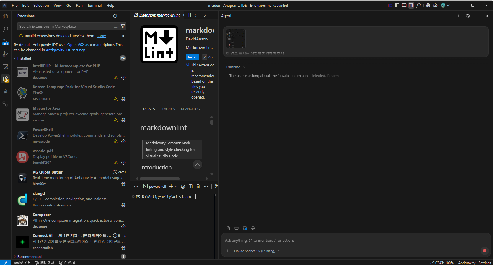

Antigravity IDE의 실제 작업 화면입니다. 번호를 눌러 보며 어느 자리가 무슨 일을 하는지 익혀 보세요.
확장 프로그램을 살펴보며 에이전트에게 경고 표시 처리법을 묻는 순간의 화면입니다. 아래 그림의 번호나 아래쪽 설명 카드를 누르면 짝이 되는 구역에 빨간 테두리가 나타납니다.

VS Code를 써 보셨다면 거의 같은 모양입니다. 달라지는 곳은 오른쪽의 에이전트 패널입니다.
화면 오른쪽의 "Agent" 창입니다. 채팅창처럼 보이지만, 내 폴더의 파일을 읽고 고치며 터미널 명령까지 실행하는 에이전트와 대화하는 곳입니다.
이 화면의 첫 메시지처럼 캡처한 사진을 붙여 질문할 수 있습니다. 오류가 나면 화면을 캡처해 보여 주세요.
에이전트가 생각 중이라는 뜻입니다. 답이 나오기 전까지 기다리면 되고, 엉뚱한 방향이면 빨간 정지 버튼을 누릅니다.
@를 치면 파일이나 폴더를 콕 집어 지정하고, /를 치면 동작 목록이 나옵니다.
입력창 왼쪽 아래에 Claude Sonnet 4.6 (Thinking)이 보입니다. 구글이 만든 도구 안에서 Anthropic의 Claude를 고른 모습입니다. 눌러서 다른 모델로 바꿀 수 있습니다.
이 화면의 왼쪽은 확장 프로그램 목록입니다. 확장 프로그램은 편집기에 기능을 덧붙이는 부품입니다. 그림에는 두 가지가 눈에 띕니다.
| 보이는 것 | 뜻 | 어떻게 할까 |
|---|---|---|
| 노란 삼각형 알림 Invalid extensions detected | 유효하지 않거나 이 도구와 맞지 않는 확장 프로그램이 있다는 알림입니다. | Show를 눌러 목록을 보고, 쓰지 않는 것은 제거합니다. 어떻게 처리할지 모르겠다면 이 화면을 캡처해 에이전트에게 물어보세요(이 화면 그대로입니다). |
| "Open VSX를 마켓플레이스로 씁니다" 안내 | Antigravity는 확장 프로그램을 마이크로소프트 VS Code 마켓이 아니라 Open VSX라는 다른 마켓에서 받습니다. | VS Code에서 쓰던 확장이 없거나 버전이 다를 수 있습니다. 마켓 설정은 안내 속 설정 링크에서 바꿀 수 있습니다. |
| 톱니 아이콘 | 그 확장 프로그램의 설정과 관리(비활성화, 제거) 메뉴입니다. | 이상한 확장은 여기서 끄거나 지웁니다. |
| 추천 표시 recommended based on files you recently opened | 최근 연 파일을 보고 편집기가 권하는 확장입니다. 마크다운 파일을 열어서 markdownlint가 추천된 경우입니다. | 필요할 때만 Install을 누릅니다. |
설치 목록에서 알아볼 만한 것: Korean Language Pack(화면을 한국어로), PowerShell(PowerShell 파일 편집 지원), AG Quota Butler(Antigravity 모델 사용량을 실시간으로 보여 주는 확장. 외부 개발자가 만든 것).
모두 읽기나 계획 위주라 안전합니다. 에이전트 입력창에 붙여 넣어 보세요.